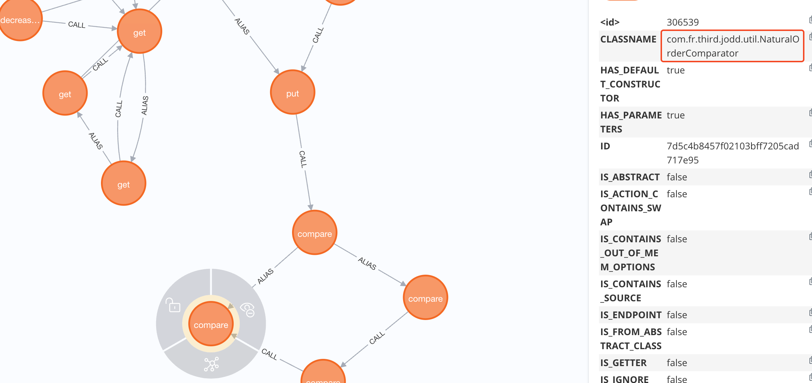
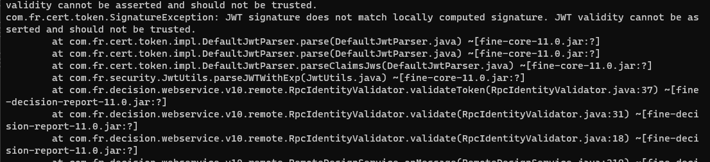

分析版本
11.0.10，此漏洞为channel接口22年历史漏洞的绕过。
接口位置位于
/webroot/decision/remote/design/channel
调用链大致为
RemoteDesignResource#onMessage
RemoteDesignService.getInstance().onMessage(var1, var2);
WorkContext.handleMessage(var6)
WorkspaceServerInvoker.handleMessage
WorkspaceServerInvoker.deserializeInvocation
(Invocation)SerializerHelper.deserialize(var1, GZipSerializerWrapper.wrap(SafeInvocationSerializer.getDefault()));
GZipSerializerWrapper.deserialize
com.fr.decision.webservice.v10.remote.RemoteDesignResourcecom.fr.serialization.GZipSerializerWrapper
注意 payload 需要通过 gzip 进行压缩。是典型的反序列化漏洞，并没有什么特别的。
分析
黑名单
22 年修复 channel 接口漏洞的方式为黑名单，文件位于 fine-core-11.0.jar/com/fr/serialization/blacklist.txt
绕过方式
黑名单共有 423 个类，很恶心，从官网描述看是有绕过方法的。但感觉直接越过黑名单不太可能，除非有全新的利用链。
二次反序列化
另一种方式是二次反序列化，其中一种是使用 SignedObject，幸运的是，它不在黑名单里。
private void readObject(java.io.ObjectInputStream s)
throws java.io.IOException, ClassNotFoundException {
java.io.ObjectInputStream.GetField fields = s.readFields();
content = ((byte[])fields.get("content", null)).clone();
signature = ((byte[])fields.get("signature", null)).clone();
thealgorithm = (String)fields.get("thealgorithm", null);
}它的成员 content 中存储序列化的数据，在 getObject 方法中则会对 content 的内容进行反序列化。
public Object getObject()
throws IOException, ClassNotFoundException
{
// creating a stream pipe-line, from b to a
ByteArrayInputStream b = new ByteArrayInputStream(this.content);
ObjectInput a = new ObjectInputStream(b);
Object obj = a.readObject();
b.close();
a.close();
return obj;
}那么问题就变成怎么在绕过帆软黑名单的情况下，在反序列化时触发 getObject 方法。
触发 getter 方法，已知的有
BeanComparator->PropertyUtils#getPropertyPOJONode#toStringJSONOBJECT#toStringToStringBean#toString
但是上述方式只有第二种 POJONode#toString 在测试环境中是存在的，那么进一步如何调用 POJONode#toString 方法。第一个想到的肯定是 BadAttributeValueExpException，但想也别想，它在黑名单里。
查找利用链
首先将收集的，常见反序列化利用链的入口类拿来与黑名单进行比对『由于包名不同，所以比对类名就好』，得到一个结果
com.fr.third.org.apache.commons.collections4.bag.TreeBag
TreeBag 可用于 CC4 的变体构造，可以使用它触发 Comparator 接口的 compare 方法。那么接下来，搜寻是否有可用的 Comparator 的实现类，它可序列化并且 compare 会调用 toString 方法。
使用 tabby 创建数据库后，在 neo4j 中执行如下查询。
match (source:Method {NAME:"readObject"})
match (sink:Method {NAME:"toString"})<-[:CALL]-(m1:Method)
where source.CLASSNAME = 'com.fr.third.org.apache.commons.collections4.bag.TreeBag' and m1.NAME = 'compare' and m1.IS_SERIALIZABLE = true
call apoc.algo.allSimplePaths(m1, source, "<CALL|ALIAS", 15) yield path where single (n in nodes(path) where n.CLASSNAME in ['java.util.TreeMap'])
return path limit 10
查询结果如下

从查询结果中可以得到类 com.fr.third.jodd.util.NaturalOrderComparator，当然它不是唯一的，你可以继续扩大查找范围。
它们的 compare 方法分别如下
public int compare(T o1, T o2) {
String str1 = o1.toString();
String str2 = o2.toString();
// ...
}
流量捕获
HW期间捕获到了这个漏洞的相关流量，其中提到了另外两个类 com.fr.base.ClassComparator 和 org.freehep.util.VersionComparator，
在 com.fr.base.ClassComparator 的 compare 方法中，会根据成员 className 构造另一个 Comparator，
public int compare(Object var1, Object var2) {
if (this.comparator == null) {
try {
this.comparator = (Comparator)StableUtils.classForName(this.className).newInstance();
} catch (Exception var4) {
FineLoggerFactory.getLogger().error(var4.getMessage(), var4);
}
}
return this.comparator == null ? 0 : this.comparator.compare(var1, var2);
}而 org.freehep.util.VersionComparator 实现了 Comparator 接口，它的 compare 方法会触发 toString 方法
public int compare(Object obj, Object obj1) {
return this.versionNumberCompare(obj.toString(), obj1.toString());
}以此触发 POJONode#toString 并进一步触发 geObject。
那么至此，利用链的构造思路就有了，调用链条如下
TreeBag#readObject
TreeMap#put
compare(key, key);
ClassComparator#compare
// 构造 VersionComparator (Comparator)StableUtils.classForName(this.className).newInstance();
this.comparator.compare(var1, var2);
VersionComparator#compare
// 触发 `POJONode#toString`
obj.toString()
...
// 触发第二次反序列化，这里可选择使用历史漏洞中的 payload
SignedObject#geObject使用 com.fr.third.jodd.util.NaturalOrderComparator 的话调用链条如下
TreeBag#readObject
TreeMap#put
compare(key, key);
NaturalOrderComparator#compare
o1.toString()
...
// 触发第二次反序列化，这里可选择使用历史漏洞中的 payload
SignedObject#geObject授权问题
在 V11.0.10 版本中测试时，channel 接口需要验证 JWT 的，意味着要获取授权才能利用。

而 V10.0.19 版本，则不需要。
插曲
在搜寻可用于构造利用链的类时，看到了 com.fr.third.v2.org.apache.commons.collections4.functors.FactoryTransformer transform 方法，
public O transform(I input) {
return (O)this.iFactory.create();
}在 Factory 的实现类里，找到 com.fr.third.v2.org.apache.commons.collections4.map.MultiValueMap$ReflectionFactory
public T create() {
try {
return (T)this.clazz.getDeclaredConstructor().newInstance();
} catch (Exception var2) {
throw new FunctorException("Cannot instantiate class: " + this.clazz, var2);
}
}它可通过反射调用创建类实例，但是只能为无参构造方法，价值不是特别大，先待定。
参考
- doc-view-4833.html
- 93
- 16758226.html 『记一次失败的帆软的反序列化链挖掘』